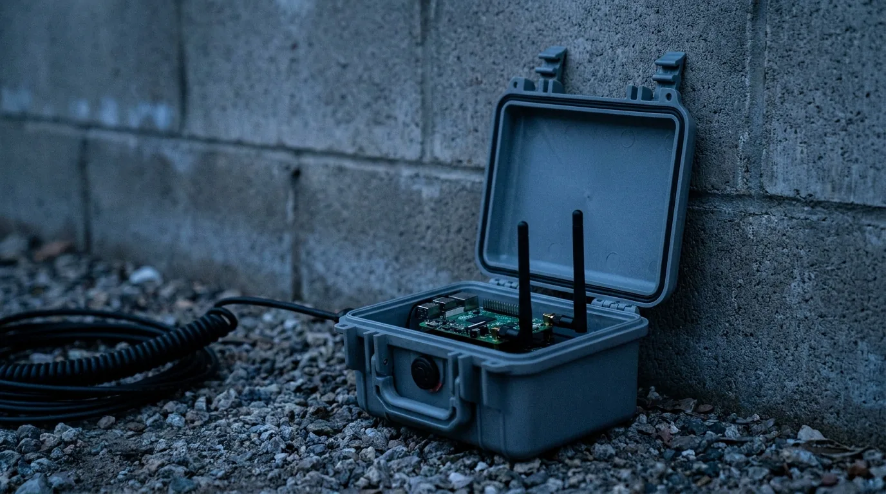
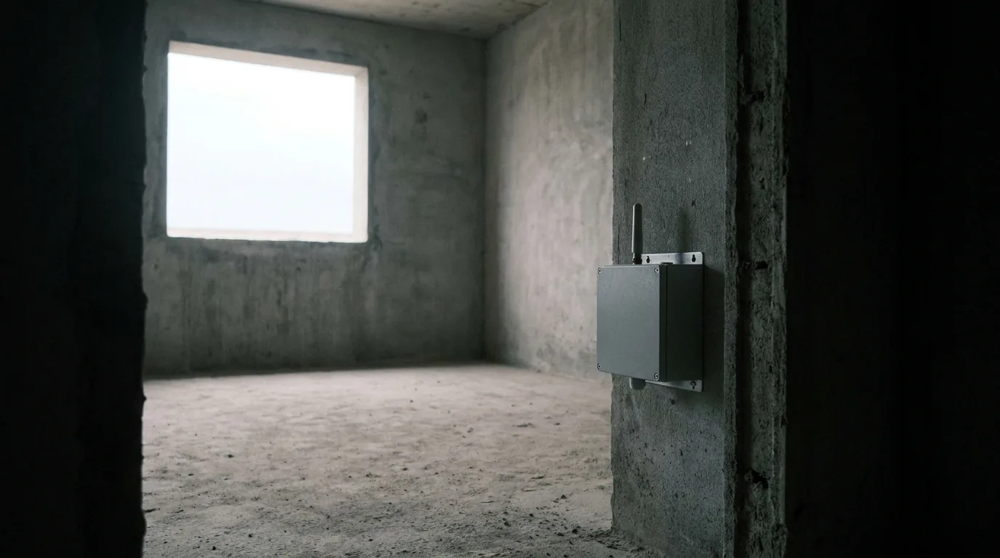

Vantage · Passive RF Sensing
See through the wall.
Emit nothing.
Active through-wall radar announces itself — its pulses are exactly what electronic warfare receivers are built to find. Vantage never transmits. It reads the ambient WiFi already filling the structure and detects human presence and movement through the wall, in real time, on edge hardware.
At $5,000–$10,000 per unit, Vantage delivers covert through-wall awareness at a fraction of the cost of systems like Camero Xaver ($60K–$85K).
0
RF emissions — receive only, nothing to detect or jam
< 25 W
Draw in continuous sensing on edge hardware
2.4 GHz
Default band, chosen for wall penetration
TRL 4
Lab-validated — field validation in progress
The problem with active radar is that it is active
Active radar today
Xaver- and Lumineye-class systems transmit RF pulses to see through the wall. In a contested EW environment that emission is a beacon: using the sensor can reveal the team that carries it. The hardware runs from roughly $5,000 handhelds to $85,000 systems.
With Vantage
Vantage transmits nothing. It listens to WiFi signals that already fill the environment, so its RF signature matches the local noise floor. There is no emission to detect and nothing to jam — and a unit costs $5,000–$10,000.
The building is already illuminated. Vantage just listens.
WiFi access points flood most structures with RF around the clock. Vantage turns that ambient field into a sensor without adding a single transmission of its own.

Illuminate
Existing WiFi signals pass through walls and reflect off everything inside the structure — including human bodies. The illumination is already there; nobody had to place it.
Listen
Vantage captures the Channel State Information of those signals. When someone moves, breathes, or changes position, the channel changes measurably. Vantage receives only — it never transmits.
Classify
An on-device ML pipeline separates human presence and movement from environmental noise and emits structured JSON for downstream systems. No cloud, fully air-gappable.
In environments without WiFi infrastructure, a covert transmitter node can be deployed to create the sensing environment.
Mission applications
Covert situational awareness for the scenarios where an active emission would compromise the operation.
Tactical breach
Know who is inside before the door opens. Passive detection means the target never knows they are being observed.
Perimeter security
Persistent, covert monitoring of structures and compounds without exposing sensor positions.
Hostage rescue
Locate and track occupants through walls in real time, without tipping off hostage takers.
Force protection
Early warning of human activity near forward operating bases, checkpoints, and sensitive facilities.
Where Vantage is today
Vantage is at TRL 4: the technology is validated in the laboratory, and field validation is in progress. We would rather state its limits than have an operator discover them.
Working now
- Presence detection through drywall, wood, concrete block, and brick at room-scale distances (3–8 m)
- Movement classification that separates human activity from environmental noise
- Full pipeline on compact edge hardware — under 25 W, no cloud, air-gappable
- Structured JSON output for downstream integration
Not yet
- Pose classification (standing, crouched, prone) is on the roadmap
- Zone localization from a multi-node mesh is on the roadmap
- ATAK Cursor-on-Target feeds are on the roadmap
- Performance degrades through metal-lined walls, wire mesh, and heavily reinforced concrete
Cost comparison: through-wall detection systems
Active radar through-wall systems are expensive and emit detectable RF energy. Vantage takes a fundamentally different approach.
| System | Type | Approximate Cost | Emissions | Covert? |
|---|---|---|---|---|
| Camero Xaver 400/800 | Active UWB Radar | $60,000 – $85,000 | Emits UWB pulses | No (detectable by EW) |
| Lumineye Lux / Lynx | Active Radar | ~$5,000 (handheld) | Emits radar signals | No (detectable by EW) |
| Ceradon Vantage | Passive WiFi Sensing | $5,000 – $10,000 | Zero emissions | Yes (completely passive) |
The passive advantage: Active radar systems broadcast their presence. In contested EW environments, that emission is a liability. It tells the enemy exactly where you are. Vantage only listens to existing WiFi signals. It never transmits, can't be detected, and can't be jammed. For teams that need to stay invisible, that's not a feature; it's a requirement.
Looking for a Lumineye alternative? If you're evaluating through-wall detection options, Vantage offers a fundamentally different approach: passive sensing with zero emissions at comparable or lower cost, with the added benefit of being completely covert.
Form factors
Tripod node
Deployable mast with directional antennas for site security and long-duration coverage.
Handheld kit
Portable controller with quick-look presence alerts for breach teams.
Remote payload
Modular payload integrates with tactical robots and drones for covert overwatch.
Technical specifications
| Subsystem | Details |
|---|---|
| RF Front-End | Multi-band WiFi 6E receiver, directional and omnidirectional antenna options, passive receive only (2.4 GHz default for optimal wall penetration). |
| Compute | Compact edge compute platform. GPU-accelerated option available. Fully air-gappable with no cloud dependency. |
| AI/ML Pipeline | Advanced multi-stage signal processing and ML classification pipeline. Optimized for real-time inference on edge hardware. |
| Power | DC 12–24 V input, hot-swappable battery packs, < 25 W draw in continuous sensing. |
| Output | Structured JSON, CLI, ATAK CoT (roadmap). Tamper-evident logging. |
| Maturity | TRL 4: Technology validated in laboratory environment. Field validation in progress. |
Sensor comparison
| Attribute | Cameras | Radar | Vantage |
|---|---|---|---|
| Line of Sight | Requires clear LoS. | Limited through-wall performance. | Sees through walls using ambient Wi-Fi. |
| Emissions | Visible-light signature. | Active RF emissions. | Zero-emission passive capture. |
| Detectability | Easily spotted or blinded. | Detectable with RF sweeps. | Covert; matches local Wi-Fi noise floor. |
| SWaP-C | Varies; often high power draw. | Bulky arrays and high power use. | Runs on Pi/Jetson-class compute under 25 W. |
| Cost | High for rugged PTZ systems. | High procurement and sustainment. | COTS radios with software-defined capability. |
Frequently asked questions
How does passive WiFi sensing work?
WiFi signals from existing access points pass through walls and reflect off objects, including human bodies. When someone moves, breathes, or changes position, the WiFi signal characteristics (Channel State Information, or CSI) change measurably. Vantage captures these CSI changes passively. It only listens, never transmits. Advanced AI/ML models then classify the patterns to detect presence and movement in real time.
What types of walls can it see through?
Vantage works through most common building materials: drywall, wood framing, concrete block, brick, and glass. Performance degrades through metal-lined walls, wire mesh, or heavily reinforced concrete. The 2.4 GHz band provides optimal wall penetration. Real-world performance varies by wall composition, thickness, and ambient WiFi density.
What is the detection range?
Detection range depends on the ambient WiFi environment and wall composition. In typical indoor environments with standard construction, presence detection has been demonstrated at room-scale distances (3–8 meters through walls). Range extends with stronger ambient WiFi signals and directional antennas.
Does it integrate with ATAK?
ATAK integration is on the development roadmap. Vantage is designed to deliver Cursor-on-Target (CoT) feeds, allowing presence data to appear as real-time map overlays in ATAK/WinTAK. Contact us if ATAK integration is a priority for your evaluation.
How is this different from Lumineye or Camero?
Lumineye and Camero use active radar: they transmit RF energy that bounces off targets. This works but has two critical drawbacks: (1) the emission is detectable by electronic warfare systems, compromising your position, and (2) the hardware is expensive ($5K–$85K). Vantage is completely passive. It only listens to existing WiFi signals and never emits. This makes it undetectable, unjammable, and dramatically more affordable.
Does it need an existing WiFi network?
Vantage works best with ambient WiFi signals from existing access points, which are present in most urban and suburban environments. In areas without WiFi infrastructure, a covert transmitter node can be deployed to create the sensing environment.
SDVOSB
Service-Disabled Veteran-Owned Small Business
SOF Experience
Developed by defense professionals who've operated in the environments this technology serves
Patent Pending
Novel approach to passive through-wall sensing protected by pending intellectual property
Ready to see through walls, without being seen?
Schedule a controlled demonstration or request the capability briefing packet. Bring a wall; we will show you what is behind it.
SDVOSB · CAGE 179U9 · UEI UZA9PFJ9RDL6